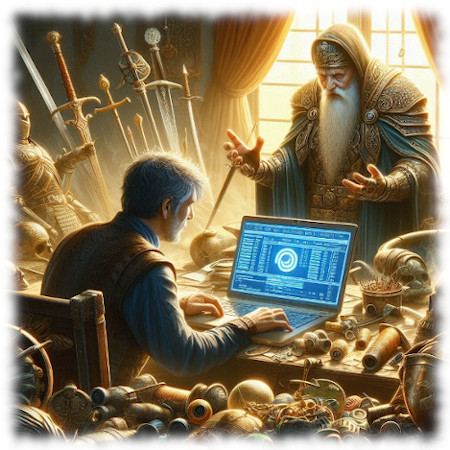

Recuperación de Cuenta
Hay tres vías para recuperar una cuenta.
- 1.- Automática: Vía formulario web (gratis).
- Si lo que has perdido es simplemente la contraseña, rellena este formulario para recuperarla.
- 2.- Vía email a SirDrunk para recuperación manual (gratis)
-
- Aplicable a: Cuentas que están activas y para las cuales la recuperación no necesita que se recurra a backups (guardados viejos del juego).
- Procedimiento
- Solicitud por email a SirDrunk indicando:
- IMPORTANTE: La solicitud debe enviarse desde el correo con el que se creó la cuenta o en su defecto se debe acreditar de forma muy clara la propiedad de la cuenta a recuperar.
- Nombre de los personajes
- Cuentas de correo que se pudieron usar para crear la cuenta.
- Avisar por Discord a SirDrunk.
- 3.- Via email a Terrikate para recuperación manual recurriendo a backups (guardados viejos del juego).
-
- Es importante aclarar que esta vía no siempre es posible. Es un proceso largo, en el cual se revisan decenas de guardados del juego hasta encontrar la cuenta/personaje a recuperar. Una vez encontrado, hay que inyectar los datos de nuevo en el servidor. Todo este proceso debe realizarse manualmente y consume gran cantidad de tiempo. Por ello, se solicita una ayuda en forma de donación para mantener el servidor abierto y ayudar a sufragar sus costes. La donación deberá hacerse cuando Terrikate confirme que es posible recuperar la cuenta, no antes, ya que desgraciadamente, a veces no es posible recuperar la cuenta.
- Procedimiento
- Solicitud por email a Terrikate indicando:
- IMPORTANTE: La solicitud debe enviarse desde el correo con el que se creó la cuenta o en su defecto se debe acreditar de forma muy clara la propiedad de la cuenta a recuperar.
- Nombre de los personajes de la cuenta
- Cuentas de correo que se pudieron usar para crear la cuenta.
- Fecha en la que se creó la cuenta.
- Indicar lo más aproximadamente posible cuándo se dejó de jugar.
- Toda información que se pueda aportar: items únicos que tenía la cuenta, localización de la casa o cualquier información que ayude a recuperar la versión mas reciente posible de la cuenta.
- Avisar por Discord a SirDrunk??????